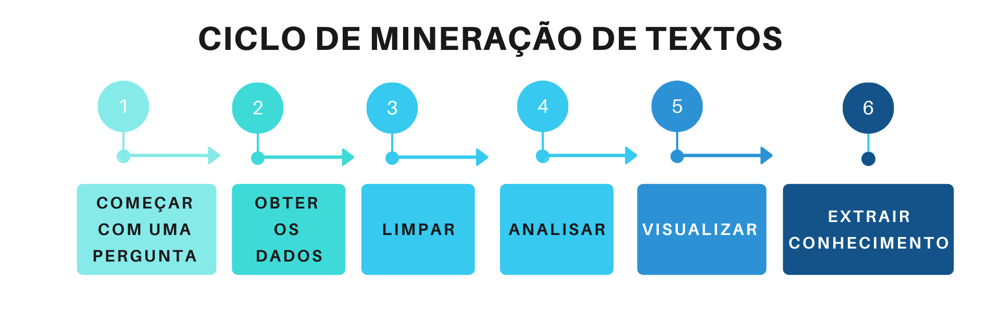
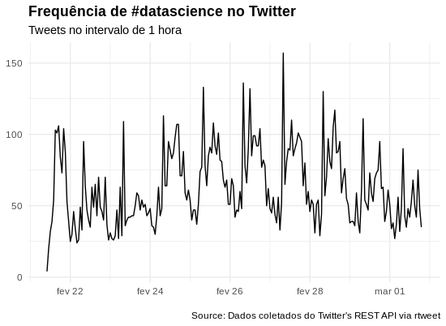

Processamento de Linguagem Natural
2020-03-01
Chapter 1 Mineração de Textos

1.1 O que é Mineração de Textos?
Atualmente, vivemos na era do Big Data, ou seja, estamos gerando dados a todo momento, porém, esses dados, na maioria das vezes, são dados não estruturados, como notícias, emails e documentos de forma geral. E mineração de textos ou do inglês Text Mining, é processo utilizado para extrair informações, dessa grande massa de dados.
1.2 Ciclos de mineração de textos

Agora, que sabemos que é possível obter informações, de grandes volumes de textos, vejamos como é o processo de obtenção dessas informações:
Começar com uma pergunta: Primeiramente, devemos ter uma pergunta que queremos responder, como, por exemplo: O que as pessoas que estão falando sobre data science?
Obter os dados: Agora, que temos um questionamento, precisamos conseguir os dados que o responda, sendo assim, irei utilizar como fonte de dados, o que as pessoas estão conversando no Twitter.
Limpar: E com os nossos dados em mãos, iremos realizar outra etapa do processo de mineração de dados, que é a limpeza dos nossos dados, removendo caracteres especiais, como acentos, pontuações, colocando todas as palavras em uma só estrutura, como, por exemplo, maiúsculo ou minúsculo e remover todas as palavras de ligação, conhecidas como stopwords, como: a, e, os, de, com, etc. Que serão irrelevantes para a pergunta que queremos responder.
Analisar: Com os nossos dados prontos, iremos realizar uma das partes mais divertidas, que é analisar os nossos dados, onde iremos aplicar diversas técnicas e verificar se com o dados que possuímos, poderemos responder à pergunta que nos motivou a analisar esses dados.
Visualizar: Nessa etapa, poderemos visualizar o resultado da nossa análise e assim gerar diversas opções de gráficos, como, por exemplo, nuvem de palavras.
Extrair conhecimento: E após, seguirmos, todas as etapas, chegamos a última, e se tudo estiver ocorrido bem, durante o processo de análise, teremos transformado os nossos dados em informação e agregando ao nosso entendimento prévio sobre o assunto, como resultado, gerado um conhecimento novo, sobre o fato que estávamos analisando.
1.3 Definições
Chegou o momento mais divertido onde criaremos um projeto de text mining, e para isso, utilizaremos a linguagem de programação R e os seguintes pacotes:
- ‘rtweet’ para conectarmos a api do Twitter.
- ‘tm’ para realizarmos a mineração dos textos.
- ‘wordcloud’ para criarmos nuvens de palavras.
- ‘tydeverse’ para facilitar a manipulação dos nossos dados.
Primeiramente, vamos instalar os pacotes que serão necessários durante o projeto e para isso vamos utilizar a função ‘install.packages()’:
install.packages("rtweet")
install.packages("tm")
install.packages("wordcloud")
install.packages("tidyverse")E com os pacotes instalados, devemos carregar os mesmos e assim poderemos utilizar as funções desses pacotes.
Precisaremos de dados e vamos coletar esses dados utilizando a API do Twitter, utilizar a função de busca ‘search_tweets()’, passando a # que iremos buscar, o número de tweets, onde o número máximo é 18 mil, informamos que não queremos os retweets e languagem dos tweets deverá ser em inglês.
E essas são as primeiras linhas da busca:
Visualizando a frequência de tweets utilizando #datascience, no intervalo de 1 hora:
datascience_tweet %>%
ts_plot("3 hours") +
ggplot2::theme_minimal() +
ggplot2::theme(plot.title = ggplot2::element_text(face = "bold")) +
ggplot2::labs(
x = NULL, y = NULL,
title = "Frequência de #datascience no Twitter",
subtitle = "Tweets no intervalo de 3 horas",
caption = "\nSource: Dados coletados do Twitter's REST API via rtweet"
)
Agora, que conhecendo um pouco os dados que possuímos, vamos começar a mineração dos textos e para isso iremos pegar a (coluna) texto e atribuir a uma variável.